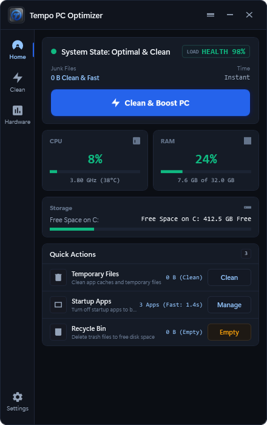

تطبيق C# / .NET 10 WPF هندسي لنظام ويندوز 10 و 11. يمنحك قراءات عتاد حية بدون أي أرقام وهمية، تحريراً آمناً للذاكرة الخاملة، ومنظم بدء التشغيل بالأيقونات الأصلية.

مراقبة حية بنسبة مئوية ملونة ومقياس موحد لنسب استهلاك CPU و RAM بدقة عتاد مباشرة.
تفريغ Working Sets للبرامج المهملة بضغطة زر مع حماية 15 خدمة أساسية لنظام التشغيل.
استقرار تلقائي فوق شريط المهام في الركن السفلي الأيمن مع حفظ واسترجاع موضع النافذة المفضل بدقة.
بدون تعقيد أو خيارات مضللة، كل وظيفة تؤدي غرضاً محدداً يحتاجه نظامك.
قياس سرعة الرفع والتنزيل الحقيقية عبر واجهات الشبكة مباشرة، مع رصد أعلى 5 برامج استهلاكاً للذاكرة.
تنظيف آمن لملفات Temp وسلة المحذوفات وكاش Chrome و Edge ومخلفات حزم npm و NuGet و pip بتأكيد صريح.
استخراج الأيقونات الرسمية للبرامج من ملفاتها الأصلية، مع كشف تلقائي لبرامج الحماية والأمان لمنع تعطيلها خطأً.
يمكنك تصغير التطبيق إلى كبسولة أفقية علوية أو شريط جانبي نحيف جداً بعرض 34px فقط. يوفر مؤشرات حية فورية لاستهلاك المعالج والذاكرة وسرعة الشبكة، مع ميزة الاختفاء التلقائي عند الاقتراب (Peek) لتوفير أقصى مساحة عمل.